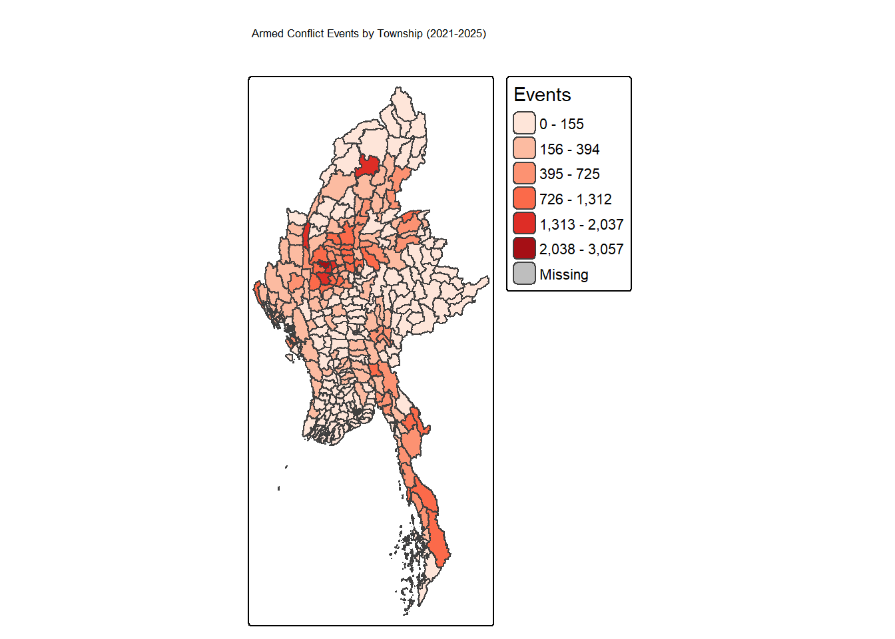
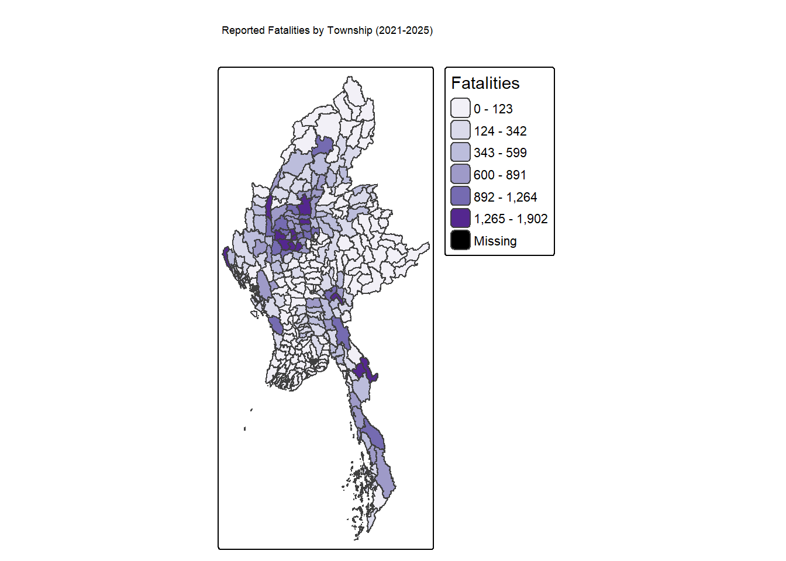
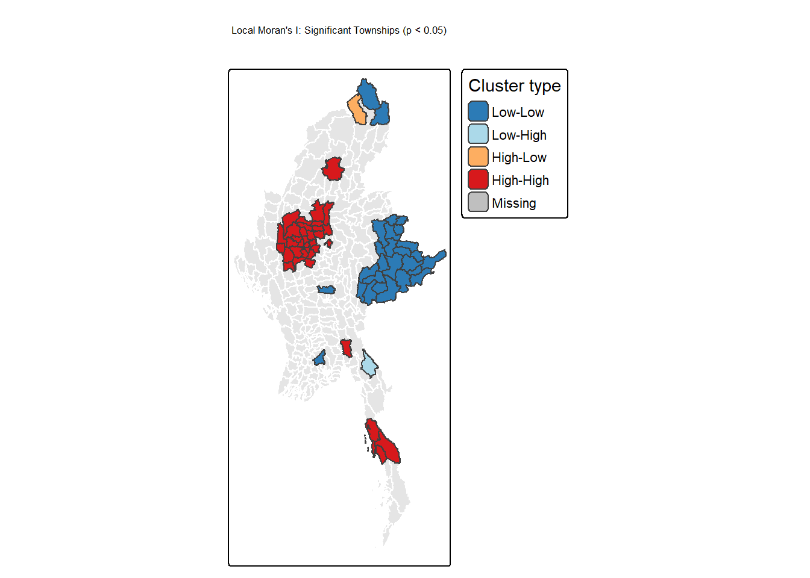
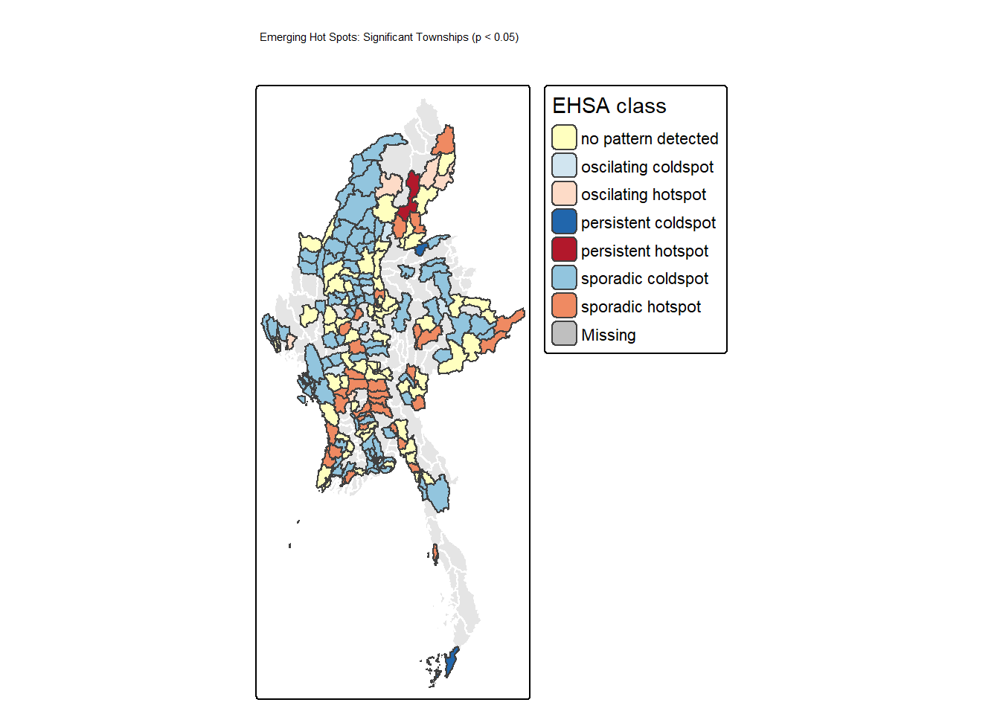
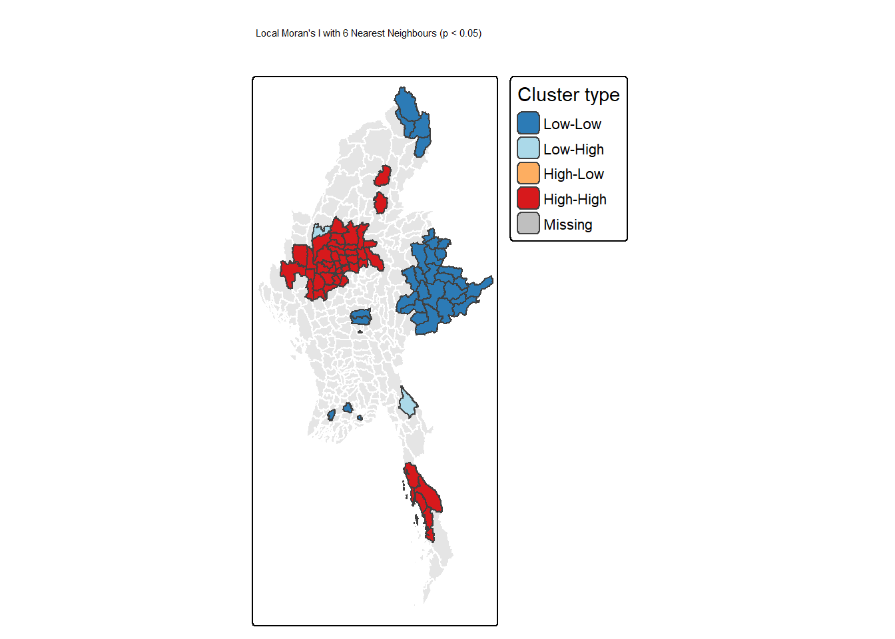
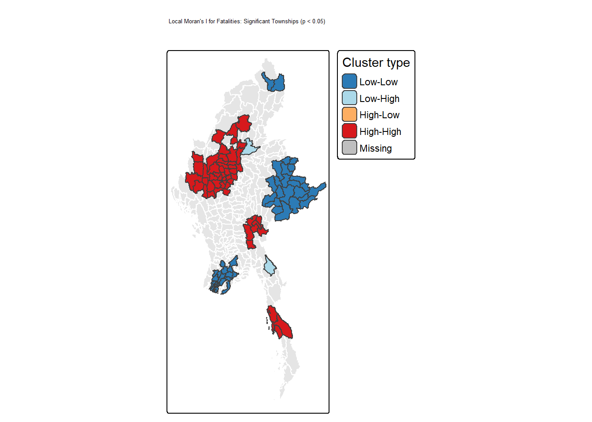
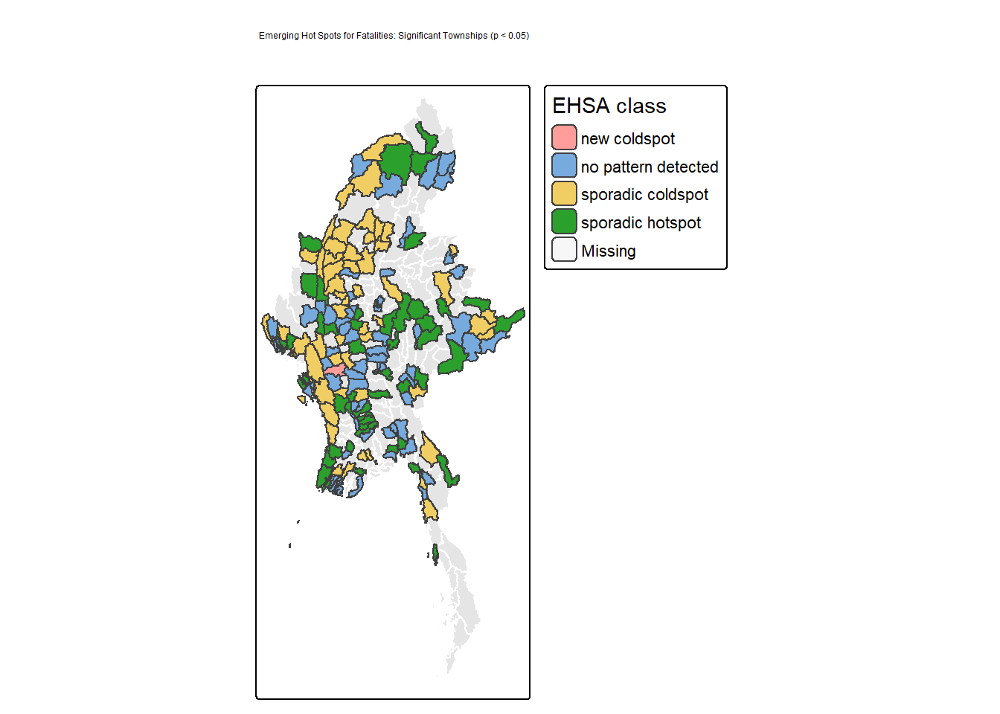

pacman::p_load(sf, tidyverse, sfdep, tmap)Geospatial Analytics for Peace
Take-home Exercise 2: Armed Conflict in Myanmar at Township Level
Data Preparation and Quality Assessment
Data Import
Reads the MIMU township boundary shapefile (admin level 3, 330 townships) and the ACLED Myanmar conflict CSV (87,109 events), then checks the column names of both.
mmr_township <- st_read("data/geospatial/mmr_polbnda_adm3_250k_mimu_1.shp")Reading layer `mmr_polbnda_adm3_250k_mimu_1' from data source
`D:\1.Abinav\1.SMU\Term 4\Geospatial Analysis\Abinav0905\GAA-Abinav-Test\Take_Home_Ex\Take_HomeEx02\data\geospatial\mmr_polbnda_adm3_250k_mimu_1.shp'
using driver `ESRI Shapefile'
Simple feature collection with 330 features and 8 fields
Geometry type: MULTIPOLYGON
Dimension: XY
Bounding box: xmin: 92.1721 ymin: 9.605884 xmax: 101.17 ymax: 28.54554
Geodetic CRS: WGS 84acled <- read_csv("data/aspatial/ACLED_Data_Myanmar_Jan2021-Sep2025.csv")names(mmr_township)[1] "ST" "ST_PCODE" "DT" "DT_PCODE" "TS" "TS_PCODE" "TS_MMR"
[8] "PCode_V" "geometry"names(acled) [1] "event_id_cnty" "event_date" "year"
[4] "time_precision" "disorder_type" "event_type"
[7] "sub_event_type" "actor1" "assoc_actor_1"
[10] "inter1" "actor2" "assoc_actor_2"
[13] "inter2" "interaction" "civilian_targeting"
[16] "iso" "region" "country"
[19] "admin1" "admin2" "admin3"
[22] "location" "latitude" "longitude"
[25] "geo_precision" "source" "source_scale"
[28] "notes" "fatalities" "tags"
[31] "timestamp" nrow(acled)[1] 87109Data Quality Checks
Checks the date type and range, missing coordinates, duplicate event IDs, location precision, event types and years before aggregating. Dates run 2021-01-01 to 2025-09-30, with 0 missing coordinates and 0 duplicate IDs. Only 384 events (about 0.4%) have approximate location precision (geo_precision 3), so they are kept and noted as a limitation.
class(acled$event_date)[1] "Date"range(acled$event_date)[1] "2021-01-01" "2025-09-30"sum(is.na(acled$latitude))[1] 0sum(is.na(acled$longitude))[1] 0sum(duplicated(acled$event_id_cnty))[1] 0table(acled$geo_precision, useNA = "always")
1 2 3 <NA>
49261 37464 384 0 table(acled$event_type, useNA = "always")
Battles Explosions/Remote violence
21121 22925
Protests Riots
15203 69
Strategic developments Violence against civilians
17833 9958
<NA>
0 table(acled$year, useNA = "always")
2021 2022 2023 2024 2025 <NA>
18917 20281 19153 17172 11586 0 Spatial Join: Events to Townships
Converts ACLED into point (sf) objects, reprojects both datasets to UTM Zone 47N (EPSG:32647), then assigns each event to the township polygon it falls inside.
acled_sf <- st_as_sf(acled, coords = c("longitude", "latitude"), crs = 4326) %>%
st_transform(32647)
mmr_township <- st_transform(mmr_township, 32647)acled_join <- st_join(acled_sf, mmr_township["TS_PCODE"], join = st_within)
nrow(acled_join)[1] 87109sum(is.na(acled_join$TS_PCODE))[1] 15Township-Level Aggregation
Drops events that fall outside every township polygon, counts events and fatalities per township, and joins the counts back onto all 330 townships so that townships with no conflict show 0 instead of disappearing.
acled_township <- acled_join %>%
st_drop_geometry() %>%
filter(!is.na(TS_PCODE)) %>%
group_by(TS_PCODE) %>%
summarise(events = n(), fatalities = sum(fatalities, na.rm = TRUE))
mmr_conflict <- mmr_township %>%
left_join(acled_township, by = "TS_PCODE") %>%
mutate(events = replace_na(events, 0),
fatalities = replace_na(fatalities, 0))
n_distinct(mmr_township$TS_PCODE)[1] 330nrow(mmr_conflict)[1] 330Space-Time Cube
Counts events per township per month and fills every township-month combination (330 townships x 57 months = 18,810 rows) with 0 where nothing happened. Then it builds the space-time cube with sfdep.
acled_monthly <- acled_join %>%
st_drop_geometry() %>%
filter(!is.na(TS_PCODE)) %>%
mutate(month = floor_date(event_date, "month")) %>%
count(TS_PCODE, month, name = "events")
cube_df <- expand_grid(
TS_PCODE = mmr_township$TS_PCODE,
month = seq(as.Date("2021-01-01"), as.Date("2025-09-01"), by = "month")
) %>%
left_join(acled_monthly, by = c("TS_PCODE", "month")) %>%
mutate(events = replace_na(events, 0))
nrow(cube_df)[1] 18810mmr_st <- spacetime(cube_df, mmr_township,
.loc_col = "TS_PCODE",
.time_col = "month")
is_spacetime_cube(mmr_st)[1] TRUEGeovisualisation and Geocommunication
Total Armed Conflict Events by Township
Choropleth of total events per township, Jan 2021 to Sep 2025. Jenks breaks are used because the counts are heavily skewed.
tm_shape(mmr_conflict) +
tm_polygons("events", style = "jenks", n = 6, palette = "Reds",
title = "Events") +
tm_layout(main.title = "Armed Conflict Events by Township (2021-2025)",
legend.outside = TRUE)
Total Fatalities by Township
Same design for reported fatalities, in a different colour so the two maps are not confused.
tm_shape(mmr_conflict) +
tm_polygons("fatalities", style = "jenks", n = 6, palette = "Purples",
title = "Fatalities") +
tm_layout(main.title = "Reported Fatalities by Township (2021-2025)",
legend.outside = TRUE)
Local Measures of Spatial Association (LMSA) Analysis
Spatial Weights
Builds queen contiguity neighbours (townships sharing a border or corner) with row-standardised weights. allow_zero = TRUE is needed because island townships have no neighbours and would otherwise cause an error. Event counts are heavily skewed, so a log1p transform (log of events + 1, which keeps zeros valid) is used so a few extreme townships do not dominate the statistic.
mmr_conflict <- mmr_conflict %>%
mutate(events_log = log1p(events))
nb_all <- st_contiguity(mmr_conflict$geometry)
mmr_conn <- mmr_conflict[spdep::card(nb_all) > 0, ]
mmr_wm <- mmr_conn %>%
mutate(nb = st_contiguity(geometry),
wt = st_weights(nb, style = "W"),
.before = 1)
nrow(mmr_conflict) - nrow(mmr_conn)[1] 3Local Moran’s I
Computes Local Moran’s I for each township using 99 simulations to get a pseudo p-value. Each township is labelled High-High, Low-Low, High-Low or Low-High by comparing it and its neighbours to the mean.
set.seed(1234)
lisa <- mmr_wm %>%
mutate(local_moran = local_moran(events_log, nb, wt, nsim = 99),
.before = 1) %>%
unnest(local_moran)Significant LMSA Map
Shows only townships with simulated p-value below 0.05. Non-significant townships are drawn in light grey as the background. The cluster labels are given a fixed order so each colour always matches the right label.
lisa_sig <- lisa %>%
filter(p_ii_sim < 0.05) %>%
mutate(mean = factor(as.character(mean),
levels = c("Low-Low", "Low-High", "High-Low", "High-High")))
tm_shape(lisa) +
tm_polygons(col = "grey90", border.col = "white") +
tm_shape(lisa_sig) +
tm_polygons("mean", palette = c("#2c7bb6", "#abd9e9", "#fdae61", "#d7191c"),
title = "Cluster type") +
tm_layout(main.title = "Local Moran's I: Significant Townships (p < 0.05)",
legend.outside = TRUE)
Emerging Hot Spot Analysis (EHSA)
Gi* and Mann-Kendall Trend Test
Runs Emerging Hot Spot Analysis on the monthly space-time cube. For every township it calculates a local Gi* value for each month (hot or cold compared to its neighbours), then runs a Mann-Kendall trend test on that series of Gi* values. tau shows the direction and strength of the trend, and p_value shows whether the trend is significant. Each township is then given a hot or cold spot category from the Gi* values and the trend. k = 1 compares each month with the previous month, and nsim = 99 is the number of simulations.
set.seed(1234)
ehsa <- emerging_hotspot_analysis(
x = mmr_st,
.var = "events",
k = 1,
nsim = 99
)
table(ehsa$classification)
no pattern detected oscilating coldspot oscilating hotspot persistent coldspot
99 4 6 9
persistent hotspot sporadic coldspot sporadic hotspot
1 154 57 Significant EHSA Map
Joins the EHSA results back onto the township boundaries and maps only townships with a trend p-value below 0.05. All other townships are drawn in light grey as the background.
ehsa_map <- mmr_township %>%
left_join(ehsa, by = c("TS_PCODE" = "location"))
ehsa_sig <- ehsa_map %>%
filter(p_value < 0.05) %>%
mutate(classification = droplevels(factor(classification)))
ehsa_pal <- c("sporadic hotspot" = "#ef8a62",
"oscilating hotspot" = "#fddbc7",
"persistent hotspot" = "#b2182b",
"no pattern detected" = "#ffffbf",
"persistent coldspot" = "#2166ac",
"oscilating coldspot" = "#d1e5f0",
"sporadic coldspot" = "#92c5de")
tm_shape(ehsa_map) +
tm_polygons(col = "grey90", border.col = "white") +
tm_shape(ehsa_sig) +
tm_polygons("classification",
palette = unname(ehsa_pal[levels(ehsa_sig$classification)]),
title = "EHSA class") +
tm_layout(main.title = "Emerging Hot Spots: Significant Townships (p < 0.05)",
legend.outside = TRUE)
table(ehsa_sig$classification)
no pattern detected oscilating coldspot oscilating hotspot persistent coldspot
69 4 5 3
persistent hotspot sporadic coldspot sporadic hotspot
1 98 33 Value-Added Analysis: Sensitivity of LMSA to the Spatial Weights
Queen contiguity left out the townships with no neighbours and depends on township borders and sizes. This repeats Local Moran’s I using the 6 nearest neighbours of each township (measured between township centroids) instead. Every township gets neighbours, so none are excluded. If the same clusters appear under both definitions, the original result does not depend on the weights choice.
set.seed(1234)
lisa_knn <- mmr_conflict %>%
mutate(nb = st_knn(st_centroid(geometry), k = 6),
wt = st_weights(nb, style = "W"),
.before = 1) %>%
mutate(local_moran = local_moran(events_log, nb, wt, nsim = 99),
.before = 1) %>%
unnest(local_moran)
lisa_knn_sig <- lisa_knn %>%
filter(p_ii_sim < 0.05) %>%
mutate(mean = factor(as.character(mean),
levels = c("Low-Low", "Low-High", "High-Low", "High-High")))
table(lisa_knn_sig$mean)
Low-Low Low-High High-Low High-High
32 2 1 44 tm_shape(mmr_conflict) +
tm_polygons(col = "grey90", border.col = "white") +
tm_shape(lisa_knn_sig) +
tm_polygons("mean", palette = c("#2c7bb6", "#abd9e9", "#fdae61", "#d7191c"),
title = "Cluster type") +
tm_layout(main.title = "Local Moran's I with 6 Nearest Neighbours (p < 0.05)",
legend.outside = TRUE)
LMSA and EHSA for Fatalities
The same LMSA and EHSA steps are repeated for reported fatalities. The settings are identical to the events analysis: queen contiguity, log(fatalities + 1), 99 simulations, and only p < 0.05 shown.
Local Moran’s I (Fatalities)
mmr_conflict <- mmr_conflict %>%
mutate(fatal_log = log1p(fatalities))
mmr_conn_f <- mmr_conflict[spdep::card(nb_all) > 0, ]
set.seed(1234)
lisa_f <- mmr_conn_f %>%
mutate(nb = st_contiguity(geometry),
wt = st_weights(nb, style = "W"),
.before = 1) %>%
mutate(local_moran = local_moran(fatal_log, nb, wt, nsim = 99),
.before = 1) %>%
unnest(local_moran)
lisa_f_sig <- lisa_f %>%
filter(p_ii_sim < 0.05) %>%
mutate(mean = factor(as.character(mean),
levels = c("Low-Low", "Low-High", "High-Low", "High-High")))tm_shape(mmr_conflict) +
tm_polygons(col = "grey90", border.col = "white") +
tm_shape(lisa_f_sig) +
tm_polygons("mean", palette = c("#2c7bb6", "#abd9e9", "#fdae61", "#d7191c"),
title = "Cluster type") +
tm_layout(main.title = "Local Moran's I for Fatalities: Significant Townships (p < 0.05)",
legend.outside = TRUE)
Emerging Hot Spot Analysis (Fatalities)
Builds a second space-time cube using monthly fatalities, then runs the same Gi* and Mann-Kendall test.
fatal_monthly <- acled_join %>%
st_drop_geometry() %>%
filter(!is.na(TS_PCODE)) %>%
mutate(month = floor_date(event_date, "month")) %>%
group_by(TS_PCODE, month) %>%
summarise(fatalities = sum(fatalities, na.rm = TRUE), .groups = "drop")
cube_f <- expand_grid(
TS_PCODE = mmr_township$TS_PCODE,
month = seq(as.Date("2021-01-01"), as.Date("2025-09-01"), by = "month")
) %>%
left_join(fatal_monthly, by = c("TS_PCODE", "month")) %>%
mutate(fatalities = replace_na(fatalities, 0))
mmr_st_f <- spacetime(cube_f, mmr_township,
.loc_col = "TS_PCODE",
.time_col = "month")
set.seed(1234)
ehsa_f <- emerging_hotspot_analysis(
x = mmr_st_f,
.var = "fatalities",
k = 1,
nsim = 99
)
table(ehsa_f$classification)
new coldspot no pattern detected oscilating coldspot sporadic coldspot
1 111 4 145
sporadic hotspot
69 ehsa_f_map <- mmr_township %>%
left_join(ehsa_f, by = c("TS_PCODE" = "location"))
ehsa_f_sig <- ehsa_f_map %>%
filter(p_value < 0.05) %>%
mutate(classification = droplevels(factor(classification)))
tm_shape(ehsa_f_map) +
tm_polygons(col = "grey90", border.col = "white") +
tm_shape(ehsa_f_sig) +
tm_polygons("classification",
palette = unname(ehsa_pal[levels(ehsa_f_sig$classification)]),
title = "EHSA class") +
tm_layout(main.title = "Emerging Hot Spots for Fatalities: Significant Townships (p < 0.05)",
legend.outside = TRUE)
Saved Outputs
dir.create("outputs", showWarnings = FALSE)
m_events <- tm_shape(mmr_conflict) +
tm_polygons("events", style = "jenks", n = 6, palette = "Reds", title = "Events") +
tm_layout(legend.outside = TRUE)
m_fatal <- tm_shape(mmr_conflict) +
tm_polygons("fatalities", style = "jenks", n = 6, palette = "Purples", title = "Fatalities") +
tm_layout(legend.outside = TRUE)
m_lisa <- tm_shape(mmr_conflict) +
tm_polygons(col = "grey90", border.col = "white") +
tm_shape(lisa_sig) +
tm_polygons("mean", palette = c("#2c7bb6", "#abd9e9", "#fdae61", "#d7191c"),
title = "Cluster type") +
tm_layout(legend.outside = TRUE)
m_lisa_f <- tm_shape(mmr_conflict) +
tm_polygons(col = "grey90", border.col = "white") +
tm_shape(lisa_f_sig) +
tm_polygons("mean", palette = c("#2c7bb6", "#abd9e9", "#fdae61", "#d7191c"),
title = "Cluster type") +
tm_layout(legend.outside = TRUE)
m_lisa_knn <- tm_shape(mmr_conflict) +
tm_polygons(col = "grey90", border.col = "white") +
tm_shape(lisa_knn_sig) +
tm_polygons("mean", palette = c("#2c7bb6", "#abd9e9", "#fdae61", "#d7191c"),
title = "Cluster type") +
tm_layout(legend.outside = TRUE)
m_ehsa <- tm_shape(ehsa_map) +
tm_polygons(col = "grey90", border.col = "white") +
tm_shape(ehsa_sig) +
tm_polygons("classification",
palette = unname(ehsa_pal[levels(ehsa_sig$classification)]),
title = "EHSA class") +
tm_layout(legend.outside = TRUE)
m_ehsa_f <- tm_shape(ehsa_f_map) +
tm_polygons(col = "grey90", border.col = "white") +
tm_shape(ehsa_f_sig) +
tm_polygons("classification",
palette = unname(ehsa_pal[levels(ehsa_f_sig$classification)]),
title = "EHSA class") +
tm_layout(legend.outside = TRUE)
tmap_save(m_events, "outputs/map_events.png", width = 6, height = 7, dpi = 200)
tmap_save(m_fatal, "outputs/map_fatalities.png", width = 6, height = 7, dpi = 200)
tmap_save(m_lisa, "outputs/map_lisa_events.png", width = 6, height = 7, dpi = 200)
tmap_save(m_lisa_f, "outputs/map_lisa_fatalities.png", width = 6, height = 7, dpi = 200)
tmap_save(m_lisa_knn, "outputs/map_lisa_knn.png", width = 6, height = 7, dpi = 200)
tmap_save(m_ehsa, "outputs/map_ehsa_events.png", width = 6, height = 7, dpi = 200)
tmap_save(m_ehsa_f, "outputs/map_ehsa_fatalities.png", width = 6, height = 7, dpi = 200)